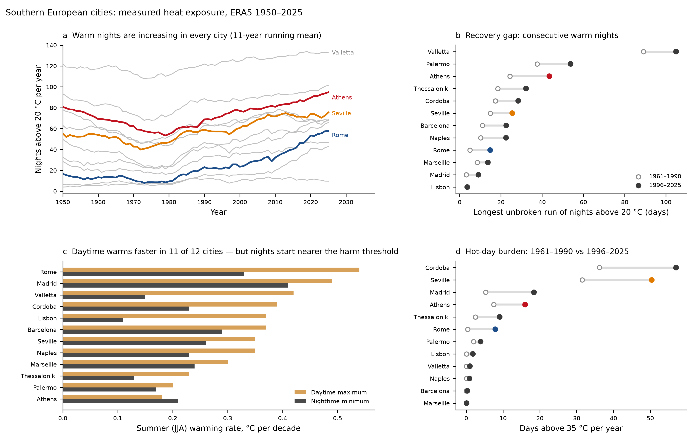
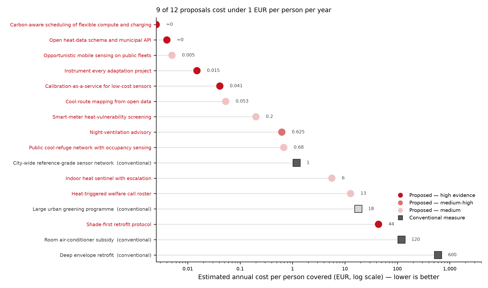

Every dataset gathered in this project, what it shows, how it changed over time, and what follows from it. Nine tables, six figures, 12 costed actions.
climate_monitoring_dataset.xlsx.Forty-six operational systems were inventoried across eight layers, each scored on resolution, latency, openness, funding model, and — the column that turned out to matter most — whether the output is wired to any actuator that changes a physical outcome without a human choosing to act.
The split is the finding. Space-based greenhouse-gas observation and urban environmental sensing — 18 systems between them — trigger nothing at all. The layers that do act (regulatory reporting, grid telemetry, hazard warning) act because a regulation or a market obliges them to, not because the sensing is better.
| Systems | Connected to an action | Data only | |
|---|---|---|---|
| Layer | |||
| Urban and environmental | 10 | 0 | 10 |
| Regulatory MRV | 8 | 4 | 4 |
| Space-based GHG | 8 | 0 | 8 |
| Hazard early warning | 7 | 3 | 4 |
| Grid and energy | 5 | 3 | 2 |
| Buildings and indoor | 3 | 1 | 2 |
| Mobility and opportunistic | 3 | 0 | 3 |
| Finance and accountability | 2 | 1 | 1 |
| layer | system | operator | geographic_scope | what_it_measures | spatial_resolution | revisit_or_latency | open_data | funding_model | coupled_to_actuator | maturity | notes_and_provenance |
|---|---|---|---|---|---|---|---|---|---|---|---|
| Space-based GHG | Sentinel-5P TROPOMI | ESA / Copernicus | Global | Column CH4, NO2, CO, SO2, aerosol | 5.5 x 7 km | Daily global; L2 within ~5 h (NRTI) | Fully open | EU public (Copernicus) | No | Operational since 2017 | Workhorse for global methane super-emitter screening; too coarse for individual small sources. https://sentinels.copernicus.eu |
| Space-based GHG | GHGSat constellation | GHGSat Inc (commercial) | Global tasked | Facility-level CH4 plumes | ~25 m | Tasked; days | Partial (subset via IMEO) | Commercial + public contracts | No | Operational | High-resolution point-source attribution; most data behind commercial licence. |
| Space-based GHG | MethaneSAT | EDF / MethaneSAT LLC | Global targeted basins | Basin-scale + point CH4 | ~100 x 400 m | Targeted; weeks | Open (stated policy) | Philanthropic (Bezos Earth Fund et al) | No | Launched 2024; mission lost contact 2025 | Data policy was open; mission failure illustrates fragility of single-satellite dependence. |
| Space-based GHG | Carbon Mapper / Tanager-1 | Carbon Mapper coalition + Planet | Global targeted | CH4 and CO2 plumes | ~30 m | Targeted | Open portal | Philanthropic + public | No | Operational since 2024 | Public plume portal is a rare example of open point-source attribution. |
| Space-based GHG | EMIT | NASA JPL (ISS) | +/-52 deg latitude | Mineral dust + opportunistic CH4/CO2 plumes | ~60 m | Opportunistic | Open | Public (NASA) | No | Operational | Repurposed mineralogy imager; shows value of opportunistic reuse of existing assets. |
| Space-based GHG | CO2M (Copernicus Anthropogenic CO2 Monitoring) | ESA / EU | Global | Anthropogenic CO2 column | ~2 x 2 km | Planned near-daily | Planned open | EU public | Designed to feed EU MRV | Launch planned ~2027 | Intended as the observational backbone of Paris Agreement global stocktake verification. |
| Space-based GHG | OCO-2 / OCO-3 | NASA | Global | Column CO2 | 1.3 x 2.3 km | 16-day repeat | Open | Public | No | Operational | Science-grade but sparse sampling; not a compliance instrument. |
| Space-based GHG | GOSAT / GOSAT-2 | JAXA / NIES | Global | CO2 CH4 column | ~10 km | 3-day | Open on registration | Public (Japan) | No | Operational | Longest continuous space GHG record (since 2009). |
| Regulatory MRV | UNEP IMEO Methane Alert and Response System (MARS) | UNEP | Global | Satellite-detected methane plumes routed to operators/governments | Source-level | Notification within days-weeks | Partial (public data platform) | UN + donor | Yes - notification, but response voluntary | Operational since 2022 | Documented low response rate to notifications is the central weakness: detection without obligation. |
| Regulatory MRV | OGMP 2.0 | UNEP / industry | Company-level global | Reported CH4 emissions at 5 levels of rigour | Asset-level | Annual | Company reports public | Voluntary industry | No | Operational | Level 4/5 requires measurement-based reporting; adoption uneven outside signatories. |
| Regulatory MRV | EU Methane Regulation (EU) 2024/1787 | European Commission | EU + importers | LDAR surveys, venting/flaring records, import intensity | Asset-level | Periodic surveys; phased 2025-2030 | Aggregates public | Regulatory (operator-funded) | Yes - mandates repair deadlines | Phasing in | Rare case where measurement is legally bound to a required action and timeline. |
| Regulatory MRV | EU CSRD / ESRS E1 | European Commission / EFRAG | EU large companies | Scope 1-3 GHG + transition plan disclosure | Entity-level | Annual | Public filings | Regulatory | No | Phasing in; scope narrowed by Omnibus 2025 | Disclosure volume rising while assurance capacity and comparability lag. |
| Regulatory MRV | EU CBAM | European Commission | EU imports | Embedded carbon in imported goods | Product-level | Quarterly reports; definitive regime 2026 | Aggregates | Regulatory | Yes - financial levy | Transitional to definitive | Creates first large-scale demand for verified product-level carbon data across borders. |
| Regulatory MRV | EU ETS / ETS2 MRV | European Commission + member states | EU | Verified installation emissions | Installation-level | Annual verified | Registry public | Regulatory | Yes - allowance surrender | Operational; ETS2 from 2027 | Most mature emissions-to-consequence coupling in existence. |
| Regulatory MRV | UNFCCC Enhanced Transparency Framework (BTR) | UNFCCC parties | Global | National inventories | National | Biennial | Public | Treaty | No | First BTRs due 2024-25 | Self-reported; independent atmospheric verification still largely absent. |
| Regulatory MRV | Climate TRACE | Climate TRACE coalition | Global | Modelled asset-level emissions from satellite + AI | Facility-level | Annual/monthly updates | Fully open | Philanthropic | No | Operational | Fills gap where official inventories are late or missing; estimates not legally recognised. |
| Grid and energy | EU smart electricity meters | DSOs / member states | EU | Household electricity consumption | Household | 15-min to daily | No (privacy-held by DSO) | Regulated asset base | Partly - enables demand response | ~60 percent EU rollout | Enormous latent sensing network already installed; almost no public-health or climate-adaptation use. |
| Grid and energy | ENTSO-E Transparency Platform | ENTSO-E | EU | Generation, load, cross-border flows, prices | Bidding zone | Hourly - near real time | Fully open | Regulated | No | Operational | Excellent open data layer; the model to copy for other domains. |
| Grid and energy | Electricity Maps / ElectricityMap | Private (freemium) | Global | Real-time grid carbon intensity | Zone | Hourly | Freemium | Commercial | Yes - carbon-aware scheduling APIs | Operational | Enables shifting flexible compute and charging to low-carbon hours. |
| Grid and energy | WattTime | WattTime (nonprofit) | Global | Marginal emissions signal | Grid region | 5-min | Freemium | Nonprofit | Yes - automated emissions reduction | Operational | Demonstrates monitoring wired directly to actuators (thermostats, EV chargers). |
| Grid and energy | Carbon-aware compute schedulers | Google / Microsoft / open source | Global datacentres | Deferrable workload timing | Datacentre | Sub-hourly | Partially documented | Corporate | Yes | Operational | Proof that digital monitoring can cut emissions without cutting technology output. |
| Urban and environmental | Copernicus Land Surface Temperature (Sentinel-3 SLSTR) | ESA / Copernicus | Global | Land surface temperature | 1 km | ~Daily | Fully open | EU public | No | Operational | Free UHI mapping input for any municipality; underused by small cities. |
| Urban and environmental | Landsat 8/9 TIRS | USGS / NASA | Global | Thermal surface temperature | 100 m (resampled 30 m) | 16-day | Fully open | Public | No | Operational | Highest free spatial resolution thermal - basis for cool-route mapping. |
| Urban and environmental | ECOSTRESS | NASA JPL (ISS) | +/-52 deg | Surface temperature and evapotranspiration | ~70 m | Variable diurnal sampling | Open | Public | No | Operational | Unique for capturing time-of-day variation in urban heat. |
| Urban and environmental | Netatmo citizen weather network | Netatmo (Legrand) | Global crowdsourced | Air temperature humidity pressure at homes | Point (dense in cities) | ~10-min | API with limits | Consumer hardware sales | No | Operational | Largest de facto urban air-temperature network; biased to affluent households - a documented equity problem. |
| Urban and environmental | Weather Underground / PWS networks | IBM | Global | Amateur weather stations | Point | ~5-min | Open API | Commercial | No | Operational | Quality control is the limiting factor for scientific use. |
| Urban and environmental | SensEURCity | JRC / EU | 3 EU cities | Low-cost air quality sensor benchmark | Point | Continuous | Open dataset | EU research | No | Completed dataset | Key reference for calibrating low-cost sensors against reference instruments. |
| Urban and environmental | European street-level urban air temperature compilation | Academic consortium | Europe | Harmonised street-level air temperature | Point | Historic compilation | Open dataset | Research grant | No | Published 2026 | Shows that dozens of city networks exist but were never interoperable until compiled post hoc. |
| Urban and environmental | I-UHI Innsbruck | University of Innsbruck | Innsbruck | Dense urban heat island observation | Point network | Continuous | Research | Research grant | No | Active project | Typical grant-funded city network - high quality but finite lifespan. |
| Urban and environmental | Urban digital twins (e.g. Destination Earth DestinE) | EU / ECMWF / ESA / EUMETSAT | EU | Coupled Earth system + urban simulation | km to sub-km | On-demand | Partly open | EU public | No | Building out | High capability but high cost; little uptake by small municipalities so far. |
| Urban and environmental | Copernicus Urban Atlas | EEA | EU cities | Land cover, imperviousness, tree cover | 10 m | ~3-yearly | Fully open | EU public | No | Operational | Free input for shade and greening prioritisation. |
| Hazard early warning | Copernicus Emergency Management Service | EU | Global on activation | Rapid mapping of floods fires | Variable | Hours on activation | Open products | EU public | Yes - civil protection | Operational | Activation-driven; not continuous. |
| Hazard early warning | EFFIS European Forest Fire Information System | EU JRC | Europe + neighbourhood | Fire danger forecast burnt area | ~8 km forecast | Daily | Open | EU public | Yes - preparedness levels | Operational | Strong example of forecast-to-action coupling in civil protection. |
| Hazard early warning | National Heat-Health Warning Systems | Member state health ministries / met services | Most EU states | Forecast heat thresholds | Region | Daily forecast 1-3 days | Public alerts | National public | Yes in principle - plan activation | Operational but uneven | Coverage exists nearly everywhere; effectiveness varies widely and evaluation is sparse. |
| Hazard early warning | Copernicus C3S European Heat and Health service | ECMWF / C3S | Europe | Heat stress indices (UTCI) | ~9-25 km | Daily to seasonal | Open | EU public | No | Operational | Provides the index layer; last-mile delivery to at-risk individuals is the gap. |
| Hazard early warning | EuroMOMO | EU mortality monitoring network | ~28 European countries | Weekly all-cause excess mortality | National/regional | Weekly (1-2 week lag) | Open charts | Public health | No | Operational | The only continent-wide outcome signal - but too lagged to steer a live heatwave response. |
| Hazard early warning | WMO/WHO Global Heat Health Information Network | WMO + WHO | Global | Guidance and coordination | — | — | Open guidance | UN | No | Operational | Norm-setting rather than sensing. |
| Hazard early warning | Lancet Countdown indicators | Academic consortium | Global | Heat exposure vulnerability and health indicators | Country | Annual | Open | Research/philanthropic | No | Operational | Annual retrospective; useful for accountability not operations. |
| Buildings and indoor | EU Energy Performance of Buildings Directive (EPBD 2024 recast) | European Commission | EU | Energy performance certificates, renovation passports, indoor environmental quality provisions | Building | At certification events | Registers partly public | Regulatory | Partly - triggers renovation requirements | Transposition to 2026-2030 | First EU instrument to name indoor environmental quality monitoring; implementation still nascent. |
| Buildings and indoor | Smart thermostats (Nest Tado Netatmo etc) | Private vendors | Global consumer | Indoor temperature and setpoint | Room | Minutes | Vendor-held | Consumer + subscription | Yes - HVAC control | Mature in north; low penetration in southern rental stock | Indoor temperature data exists at scale but is commercially siloed and skewed to owners of heating/cooling systems. |
| Buildings and indoor | Social housing indoor monitoring pilots | Municipalities / housing associations | Scattered pilots | Indoor temperature and humidity | Dwelling | Continuous | Rarely public | Project grants | Rarely | Pilot stage | No systematic EU-wide indoor heat surveillance in vulnerable housing exists. |
| Mobility and opportunistic | Mobile sensing from transit fleets | Various research projects | Scattered | Air temperature and pollutants from buses/trams | Route-level transects | Continuous while in service | Rarely public | Research | No | Pilot to early operational | Cheapest route to dense spatial coverage; underexploited in southern Europe. |
| Mobility and opportunistic | Vehicle-fleet ambient temperature telemetry | Automotive OEMs | Global | Ambient temperature from in-car sensors | Road network | Continuous | Not public | Commercial | No | Exists but closed | Millions of moving thermometers already deployed; data locked in OEM clouds. |
| Mobility and opportunistic | Smartphone-derived population presence | Telecoms / MNO analytics | Global | Where people are and when | Cell/grid | Near real time | Aggregates sometimes sold | Commercial | No | Operational | Would enable exposure-weighted heat risk; privacy governance is the blocker not the technology. |
| Finance and accountability | TCFD / ISSB IFRS S2 | ISSB | Adopting jurisdictions | Climate-related financial disclosure | Entity | Annual | Public filings | Regulatory/voluntary | No | Adoption spreading | Converging disclosure baseline; still self-reported. |
| Finance and accountability | Carbon credit MRV (Verra Gold Standard digital MRV) | Registries | Global projects | Project-level removals/reductions | Project | Periodic | Registry public | Market | Yes - credit issuance | Operational and contested | Digital MRV is being adopted to address documented over-crediting; verification independence remains the issue. |
Walking the causal chain from emission to health outcome and scoring how well each stage is observed produces four stages at severity 5 — essentially unmeasured.

| stage | question_the_data_should_answer | observation_density | latency | who_can_see_it | coupled_to_action | gap_severity_0to5 | evidence_for_the_gap |
|---|---|---|---|---|---|---|---|
| Emission - large point sources | Which facilities are leaking right now | High | Days | Public and regulators | Partial | 1 | Sentinel-5P, GHGSat, Carbon Mapper, EMIT and IMEO MARS give near-global screening; EU Methane Regulation adds repair deadlines from 2025. |
| Emission - diffuse and small sources | What are the many small emitters below detection limit doing | Low | — | Nobody | No | 4 | Satellite detection limits sit far above the per-source rate of distributed sources (small leaks, agriculture, domestic combustion); inventories fill the gap with modelled factors, not measurements. |
| Emission - response to detection | Was a detected leak actually fixed | Very low | Undefined | Nobody systematically | No | 5 | Partly revised: UNEP's satellite alert programme reports 40+ super-emitters curbed since 2023, and IEA Global Methane Tracker 2026 plus Nature Communications 2026 on super-emitter duration now quantify how long leaks persist. A response pathway exists; a public verified repair record still does not. |
| Concentration and climate state | What is the atmosphere doing | Very high | Hours | Fully public | — | 0 | ERA5, Copernicus C3S, GOSAT, OCO, ground networks (ICOS). This is the best-observed layer in the whole chain. |
| Hazard - outdoor heat forecast | Will it be dangerously hot in three days | High | Daily | Public | Yes via warnings | 1 | C3S heat and health service, national met services, UTCI indices are operational across Europe. |
| Hazard - intra-urban heat | Which streets and neighbourhoods are hottest | Medium in rich cities; low elsewhere | Days to weeks | Researchers mostly | No | 3 | Landsat/Sentinel-3 surface temperature is free but surface temperature is not air temperature; street-level air-temperature networks exist in dozens of European cities but were only made interoperable retrospectively by a 2026 compilation, and coverage is grant-dependent. |
| Hazard - indoor heat | How hot is it inside the room where a vulnerable person sleeps | Near zero | — | Nobody | No | 5 | Still unmeasured at population scale in southern Europe, but 2026 pilots now exist elsewhere (City of Miami heat-sensor programme; Dutch crowdsourced indoor observations, QJRMS 2026; Boulder mobile homes, Environ. Res. Commun. 2026; New Zealand vulnerable households 2026). Feasibility is demonstrated; deployment and coupling are not. |
| Exposure | Who is where when it is hot | Low for the purpose | Near real time but inaccessible | Telecom and OEM clouds | No | 4 | Mobile-network presence data and vehicle-fleet ambient temperature telemetry exist commercially but are not fused with hazard data for public health. Blocker is governance not technology. |
| Vulnerability | Which specific individuals are at risk in this building tonight | Fragmented | Static registers | Health and social services in silos | Rarely | 4 | Vulnerable-person registers exist in some municipalities but are rarely linked to live hazard feeds; identification of at-risk individuals is the recurring weak point in heat-plan evaluations. |
| Intervention - passive | Do homes have shutters shading or reflective roofs | Very low | — | Nobody | No | 4 | EPBD energy performance certificates capture insulation and heating but external solar protection and summer overheating risk are weakly represented in most national certificate schemes. |
| Intervention - active | Is cooling available and affordable and being used | Low | — | DSOs hold proxy data | No | 3 | Smart meters record the electrical signature of cooling at ~15-minute resolution for a majority of EU households, but the data is not used for heat-vulnerability detection. |
| Behaviour | Did people receive understand and act on the warning | Near zero | — | Nobody | No | 5 | Heat-plan evaluations repeatedly find that plans exist nearly everywhere yet mortality persists; the missing measurement is whether the last mile - individual receipt and action - happened at all. |
| Outcome - mortality | How many people died from this heatwave | Medium | 1-2 weeks lag | Public | No | 3 | EuroMOMO gives weekly excess mortality and the 2024 Nature Medicine analysis quantified heat-related deaths, but the lag means outcome data cannot steer a live response - only post-hoc accountability. |
| Outcome - morbidity | How many people were harmed but did not die | Low | Weeks to months | Partially | No | 4 | Emergency-department and ambulance data are rarely syndromically linked to heat in near real time outside a few national systems. |
| Accountability - adaptation spend | Did adaptation money reduce measured exposure | Very low | Annual at best | Auditors | No | 5 | Adaptation projects are almost never instrumented for before-and-after measurement of the exposure they were funded to reduce; monitoring budgets are capital-heavy and end with the project grant. |
Daily maximum and minimum temperatures were pulled from ERA5 reanalysis for twelve southern European cities over 1950–2025 (333,108 city-days), and indicators computed per city-year.

Between the 1960s and the 2020s, nights above 20 °C rose 1.5× while nights above 25 °C rose 6.5× and days above 35 °C 2.7×. The further into the tail you look, the faster the growth — which is why averages understate the change people actually feel. The 2020s row covers 2020–2025 only.
| tropical_nights_20 | days_over_35 | longest_tn20_run | torrid_nights_25 | cdd_18 | |
|---|---|---|---|---|---|
| decade | |||||
| 1960 | 45.9 | 8.1 | 21.2 | 1.1 | 738 |
| 1970 | 37.8 | 4.7 | 17 | 0.6 | 643 |
| 1980 | 46.6 | 8.5 | 21.9 | 1.2 | 752.8 |
| 1990 | 53.3 | 8.5 | 25.9 | 1.7 | 789.8 |
| 2000 | 58.2 | 11.8 | 28 | 2.7 | 862 |
| 2010 | 63.4 | 13.9 | 32.6 | 3.8 | 910.2 |
| 2020 | 69.3 | 21.6 | 38.6 | 7.2 | 1,012 |
Comparing 2011–2025 against 1996–2010: warm nights increased in 10 of 12 cities (mean +9.3 nights/year), the longest unbroken warm-night run in 11 of 12, and days above 35 °C in 11 of 12. Lisbon and Cordoba are the exceptions on warm nights, both slightly down. Rome (+20.5 nights) and Madrid (+19.0) moved most — both starting from a historically low base, which is why a tripling there still leaves them below Valletta's absolute level.
| tn20_1996_2010 | tn20_2011_2025 | run_1996_2010 | run_2011_2025 | d35_1996_2010 | d35_2011_2025 | tn20_change | run_change | d35_change | |
|---|---|---|---|---|---|---|---|---|---|
| city | |||||||||
| Rome | 26.6 | 47.1 | 9.5 | 20.1 | 1.5 | 14.3 | 20.5 | 10.6 | 12.8 |
| Madrid | 15.8 | 34.8 | 5.5 | 12.7 | 10.9 | 25.8 | 19 | 7.2 | 14.9 |
| Barcelona | 44.5 | 60.9 | 20.8 | 24.5 | 0.1 | 0.5 | 16.4 | 3.7 | 0.4 |
| Athens | 77.7 | 88.5 | 35.4 | 51.6 | 14.3 | 17.7 | 10.8 | 16.2 | 3.4 |
| Naples | 51 | 60.5 | 21.2 | 23.9 | 0.3 | 1.5 | 9.5 | 2.7 | 1.2 |
| Palermo | 87.7 | 96.9 | 44.3 | 63.3 | 4.5 | 3.3 | 9.2 | 19 | -1.2 |
| Seville | 64.6 | 73.3 | 22.9 | 28 | 41.5 | 59.3 | 8.7 | 5.1 | 17.8 |
| Marseille | 35.6 | 43.8 | 13.4 | 14 | 0 | 0.2 | 8.2 | 0.6 | 0.2 |
| Valletta | 125.7 | 132 | 99.9 | 109.9 | 0 | 2.1 | 6.3 | 10 | 2.1 |
| Thessaloniki | 68.5 | 72.6 | 28.1 | 36.3 | 7.1 | 11.2 | 4.1 | 8.2 | 4.1 |
| Lisbon | 11.5 | 11 | 3.9 | 3.4 | 0.7 | 2.9 | -0.5 | -0.5 | 2.2 |
| Cordoba | 69.7 | 68.9 | 26.3 | 30.4 | 49.7 | 64.3 | -0.8 | 4.1 | 14.6 |

| city | days_over_35_per_decade | days_over_35_p | days_over_35_1961_1990 | days_over_35_1996_2025 | days_over_40_per_decade | days_over_40_p | days_over_40_1961_1990 | days_over_40_1996_2025 | tropical_nights_20_per_decade | tropical_nights_20_p | tropical_nights_20_1961_1990 | tropical_nights_20_1996_2025 | torrid_nights_25_per_decade | torrid_nights_25_p | torrid_nights_25_1961_1990 | torrid_nights_25_1996_2025 | cdd_18_per_decade | cdd_18_p | cdd_18_1961_1990 | cdd_18_1996_2025 | mean_tmax_JJA_per_decade | mean_tmax_JJA_p | mean_tmax_JJA_1961_1990 | mean_tmax_JJA_1996_2025 | mean_tmin_JJA_per_decade | mean_tmin_JJA_p | mean_tmin_JJA_1961_1990 | mean_tmin_JJA_1996_2025 | tn20_ratio | over35_ratio | longest_tn20_run_per_decade | longest_tn20_run_1961_1990 | longest_tn20_run_1996_2025 |
|---|---|---|---|---|---|---|---|---|---|---|---|---|---|---|---|---|---|---|---|---|---|---|---|---|---|---|---|---|---|---|---|---|---|
| Athens | 1.46 | 0 | 7.5 | 16 | 0.05 | 0.33 | 0.3 | 0.6 | 3.01 | 0 | 61.2 | 83.1 | 1.32 | 0 | 0.8 | 5.7 | 26.46 | 0 | 985.2 | 1,147.7 | 0.18 | 0 | 30.9 | 32.2 | 0.21 | 0 | 20.5 | 21.7 | 1.36 | 2.13 | 2.99 | 24.4 | 43.5 |
| Barcelona | 0.07 | 0 | 0 | 0.3 | 0 | — | 0 | 0 | 5.59 | 0 | 29.1 | 52.7 | 0.05 | 0.03 | 0 | 0.2 | 39.98 | 0 | 457.8 | 636.5 | 0.37 | 0 | 25.1 | 26.9 | 0.29 | 0 | 18.5 | 19.8 | 1.81 | — | 2.84 | 11.1 | 22.6 |
| Cordoba | 3.9 | 0 | 36.2 | 57 | 1.37 | 0 | 1.7 | 7.1 | 2.42 | 0 | 56.2 | 69.3 | 0.65 | 0 | 1.3 | 4.2 | 41.78 | 0 | 1,094.4 | 1,317.9 | 0.39 | 0 | 32.9 | 35.1 | 0.23 | 0 | 19.7 | 21 | 1.23 | 1.57 | 1.55 | 17.3 | 28.4 |
| Lisbon | 0.45 | 0 | 0.1 | 1.8 | 0.04 | 0.03 | 0 | 0.1 | 0.9 | 0 | 9.4 | 11.3 | 0.05 | 0 | 0 | 0.2 | 29.71 | 0 | 347.3 | 460.1 | 0.37 | 0 | 24.6 | 26 | 0.11 | 0 | 17.2 | 17.8 | 1.2 | 18 | 0.19 | 3.7 | 3.7 |
| Madrid | 3.35 | 0 | 5.3 | 18.4 | 0.11 | 0 | 0 | 0.4 | 4.46 | 0 | 7.9 | 25.3 | 0.05 | 0.04 | 0 | 0.2 | 49.33 | 0 | 580.6 | 788.6 | 0.49 | 0 | 29.1 | 31.3 | 0.41 | 0 | 16 | 17.8 | 3.2 | 3.47 | 1.48 | 3.2 | 9.1 |
| Marseille | 0.03 | 0.12 | 0 | 0.1 | 0 | — | 0 | 0 | 3.92 | 0 | 21.4 | 39.7 | 0.02 | 0.34 | 0.1 | 0.1 | 29.4 | 0 | 466.1 | 605.2 | 0.3 | 0 | 25.7 | 27.1 | 0.24 | 0 | 18.1 | 19.3 | 1.86 | — | 1.16 | 8.5 | 13.7 |
| Naples | 0.22 | 0 | 0.1 | 0.9 | 0 | — | 0 | 0 | 3.9 | 0 | 33.2 | 55.7 | 0.15 | 0.02 | 0 | 0.7 | 34.75 | 0 | 574.7 | 757.1 | 0.35 | 0 | 26.7 | 28.5 | 0.23 | 0 | 18.8 | 20.1 | 1.68 | 9 | 2.18 | 10.2 | 22.5 |
| Palermo | 0.42 | 0.01 | 2 | 3.9 | 0.04 | 0.03 | 0 | 0.2 | 2.26 | 0 | 78.2 | 92.3 | 0.89 | 0 | 2.1 | 6.4 | 30.19 | 0 | 864.6 | 1,018.7 | 0.2 | 0 | 28.2 | 29.3 | 0.17 | 0 | 20.8 | 21.8 | 1.18 | 1.95 | 3.28 | 37.6 | 53.8 |
| Rome | 1.93 | 0 | 0.4 | 7.9 | 0.01 | 0.11 | 0 | 0 | 5.5 | 0 | 13.2 | 36.8 | 0.08 | 0 | 0 | 0.3 | 47.61 | 0 | 519.3 | 750.6 | 0.54 | 0 | 27.3 | 30 | 0.33 | 0 | 17.4 | 19.1 | 2.79 | 19.75 | 2.28 | 5 | 14.8 |
| Seville | 3.48 | 0 | 31.5 | 50.4 | 1.24 | 0 | 0.9 | 5.9 | 3.93 | 0 | 50.3 | 68.9 | 0.78 | 0 | 0.3 | 3.6 | 42.85 | 0 | 1,051.2 | 1,274 | 0.35 | 0 | 32.6 | 34.6 | 0.26 | 0 | 19.4 | 20.8 | 1.37 | 1.6 | 2.16 | 14.9 | 25.5 |
| Thessaloniki | 1.04 | 0 | 2.5 | 9.1 | 0.02 | 0.35 | 0 | 0.2 | 1.73 | 0.03 | 51.6 | 70.6 | 0.47 | 0.01 | 1.3 | 4.4 | 18.38 | 0 | 791.7 | 944.4 | 0.23 | 0 | 29.2 | 30.9 | 0.13 | 0 | 20.1 | 21.3 | 1.37 | 3.64 | 1.6 | 18.5 | 32.2 |
| Valletta | 0.3 | 0 | 0 | 1 | 0.04 | 0.11 | 0 | 0.1 | 2.5 | 0 | 114.9 | 128.8 | 2.71 | 0 | 6 | 20.1 | 46.19 | 0 | 844.8 | 1,062.5 | 0.42 | 0 | 25.6 | 27.4 | 0.15 | 0 | 22.2 | 23.1 | 1.12 | — | 2.44 | 89.1 | 104.9 |
Publication counts per theme, 2015–2025, from a structured bibliographic query. Every theme grew; the newest ones grew from near-zero bases, which says more about when a term entered use than about how much is known. Carbon-aware computing went from single digits to a few hundred papers a year; low-cost urban temperature sensing grew roughly tenfold.
| year | satellite_methane_detection | digital_MRV | low_cost_urban_temperature | heat_health_early_warning | urban_digital_twin | indoor_overheating | passive_cooling_shading | carbon_aware_computing |
|---|---|---|---|---|---|---|---|---|
| 2015 | 972 | 14 | 35 | 442 | 10 | 1072 | 5541 | 10 |
| 2016 | 1220 | 8 | 56 | 518 | 14 | 1147 | 5953 | 7 |
| 2017 | 1299 | 10 | 98 | 502 | 36 | 1524 | 6944 | 5 |
| 2018 | 1394 | 20 | 133 | 626 | 138 | 1544 | 7403 | 6 |
| 2019 | 1566 | 12 | 184 | 764 | 397 | 1986 | 8777 | 15 |
| 2020 | 1812 | 28 | 316 | 1005 | 1032 | 2332 | 10354 | 20 |
| 2021 | 2193 | 23 | 368 | 1278 | 2038 | 2557 | 11572 | 29 |
| 2022 | 2473 | 43 | 438 | 1478 | 3840 | 2584 | 11809 | 41 |
| 2023 | 2869 | 44 | 509 | 2027 | 6300 | 3232 | 14753 | 96 |
| 2024 | 2820 | 65 | 542 | 2068 | 8228 | 3143 | 13854 | 147 |
| 2025 | 3583 | 184 | 797 | 2702 | 13821 | 4012 | 17249 | 385 |
Twelve interventions, each specified with capital and running cost, deploying institution, expected effect, evidence strength, and explicit failure modes. All twelve are compatible with continued technological development; one of them consists of running more computation, scheduled differently.

Ranking by ease rather than cost reorders the list substantially. The cheapest item in the catalogue (€0.004 per person per year) sits in the third tier because it needs a mandate; the item with zero cost and zero permission requirements sits first.
| id | hardware | legal | coordination | money | weeks_to_first_result | ease_burden | solution | tier | gap_closed | evidence_strength | evidence_score | eur_per_person_year | ease_tier |
|---|---|---|---|---|---|---|---|---|---|---|---|---|---|
| S11 | 0 | 0 | 0 | 0 | 2 | 0 | Carbon-aware scheduling of flexible compute and charging | Cross-cutting | Grid signal exists but is under-actuated | High for grid-carbon reduction; medium for the building pre-cooling variant | 3 | 0 | 1 · Do now |
| S5 | 0 | 0 | 1 | 0 | 8 | 1 | Cool-route mapping from open data | Neighbourhood | Intra-urban heat partially mapped but unused | Medium - the mapping method is mature; behavioural uptake is the uncertainty | 2 | 0.05 | 1 · Do now |
| S3 | 0 | 1 | 1 | 0 | 6 | 2 | Night-ventilation advisory | Household | Behaviour unmeasured; indoor-outdoor crossover unknown | Medium-high for the physics; low for delivery-channel effectiveness | 2.5 | 0.62 | 2 · One agreement away |
| S1 | 1 | 0 | 1 | 1 | 8 | 3 | Indoor heat sentinel with escalation | Household | Indoor heat unmonitored; behaviour unmeasured | Medium - components proven; end-to-end escalation loop rarely evaluated | 2 | 5.62 | 2 · One agreement away |
| S10 | 1 | 1 | 1 | 0 | 10 | 3 | Public cool-refuge network with occupancy sensing | Neighbourhood | Refuge use unmeasured | Medium - refuge programmes are widespread; occupancy measurement almost never done | 2 | 0.68 | 2 · One agreement away |
| S12 | 0 | 2 | 1 | 0 | 12 | 3 | Instrument every adaptation project | Cross-cutting | Adaptation spend not evaluated against measured exposure | High as a method; the gap is institutional not technical | 3 | 0.01 | 2 · One agreement away |
| S6 | 2 | 1 | 1 | 0 | 16 | 4 | Opportunistic mobile sensing on public fleets | Neighbourhood | Intra-urban heat under-sampled | Medium - demonstrated in research deployments; rarely operationalised | 2 | 0.01 | 3 · Needs a budget line |
| S8 | 0 | 2 | 2 | 0 | 26 | 4 | Open heat-data schema and municipal API | Cross-cutting | Networks are non-interoperable; data dies with the project | High by analogy with ENTSO-E and the 2026 street-level compilation effort | 3 | 0 | 3 · Needs a budget line |
| S2 | 0 | 2 | 2 | 0 | 30 | 4 | Smart-meter heat-vulnerability screening | Neighbourhood | Cooling availability and use unmeasured | Medium - the signal is well established in load-disaggregation literature; the public-health application is largely untested | 2 | 0.2 | 3 · Needs a budget line |
| S9 | 0 | 2 | 2 | 1 | 20 | 5 | Heat-triggered welfare call roster | Neighbourhood | Vulnerability data not linked to hazard data | Medium - plan components are recommended by WHO guidance but evaluation of the individual-contact component is sparse | 2 | 12.8 | 3 · Needs a budget line |
| S7 | 2 | 1 | 2 | 0 | 26 | 5 | Calibration-as-a-service for low-cost sensors | Cross-cutting | Low-cost networks not comparable or trusted | High - co-location calibration is the established method and the European street-level compilation shows the interoperability need | 3 | 0.04 | 3 · Needs a budget line |
| S4 | 2 | 1 | 1 | 2 | 24 | 6 | Shade-first retrofit protocol | Household | Passive intervention presence unmeasured | High for the building physics; medium for population-scale deployment | 3 | 43.75 | 4 · Programme-scale |
| id | solution | tier | gap_closed | mechanism | capex_eur_per_unit | opex_eur_per_unit_per_year | unit | who_deploys | expected_effect | evidence_strength | failure_modes | stops_tech_development |
|---|---|---|---|---|---|---|---|---|---|---|---|---|
| S1 | Indoor heat sentinel with escalation | Household | Indoor heat unmonitored; behaviour unmeasured | Sub-30 EUR battery sensor (ESP32 + SHT4x) in the bedroom of an at-risk resident. Reports indoor Tmax/Tmin over LoRaWAN or the household router. Crossing a night threshold (e.g. indoor Tmin > 26 C for 2 nights) triggers an automated welfare call from the municipality, not just a push notification. | 25 | 4 | dwelling | Municipality or housing association | Converts a population-level forecast into a person-level trigger. Targets the room where most heat deaths occur. | Medium - components proven; end-to-end escalation loop rarely evaluated | Alert fatigue; false positives in unoccupied rooms; battery neglect; requires a human on the other end of the call | No |
| S2 | Smart-meter heat-vulnerability screening | Neighbourhood | Cooling availability and use unmeasured | Use existing 15-minute smart-meter data already collected by DSOs. A household with no cooling load signature during a heatwave, in a dwelling flagged as poor thermal quality, with an occupant over 75, is a priority visit. No new hardware. | 0 | 0.2 | household screened | DSO plus municipal social services under a data agreement | Identifies non-cooling households at scale for the price of a query. Uses infrastructure already paid for. | Medium - the signal is well established in load-disaggregation literature; the public-health application is largely untested | Data-protection approval is the whole project; false negatives for households that cool by shading; requires DSO cooperation | No |
| S3 | Night-ventilation advisory | Household | Behaviour unmeasured; indoor-outdoor crossover unknown | Free service that tells a household the exact hour to open and close windows, computed from measured indoor temperature (S1 sensor or a manual reading) and the local outdoor forecast. Delivered by SMS so it works without a smartphone. | 0 | 1 | household | Municipality or met service | Night ventilation is one of the few cooling measures with zero marginal cost and a measurable effect on indoor Tmin in Mediterranean building stock. | Medium-high for the physics; low for delivery-channel effectiveness | Security concerns prevent window-opening at night in some neighbourhoods; noise and air pollution; no benefit when outdoor Tmin stays above indoor | No |
| S4 | Shade-first retrofit protocol | Household | Passive intervention presence unmeasured | Prioritise external shading (rolling shutters, external blinds, awnings) and reflective roof coatings over deep envelope retrofits or AC subsidies. External shading blocks solar gain before it enters; internal blinds do not. Instrument a sample with S1 sensors to measure the actual effect. | 300 | 10 | dwelling | Housing association or subsidy scheme | External solar protection is the highest-effect low-cost intervention on Mediterranean summer indoor temperature. | High for the building physics; medium for population-scale deployment | Heritage and facade restrictions; landlord-tenant split incentive in rental stock; poor installation quality | No |
| S5 | Cool-route mapping from open data | Neighbourhood | Intra-urban heat partially mapped but unused | Combine free Landsat/Sentinel-3 thermal imagery, Copernicus Urban Atlas tree cover, and OpenStreetMap building footprints to compute shaded walking routes and publish them in the municipal routing app. Pure software on open inputs. | 0 | 8,000 | city | Municipality or civic tech group | Reduces exposure during unavoidable daytime movement for people without cars. | Medium - the mapping method is mature; behavioural uptake is the uncertainty | Surface temperature is not the same as felt temperature; routes must be validated on the ground; maintenance after the grant ends | No |
| S6 | Opportunistic mobile sensing on public fleets | Neighbourhood | Intra-urban heat under-sampled | Mount a shielded temperature sensor on buses, trams and municipal waste vehicles. A 60-vehicle bus fleet covers more street kilometres per day than any static network a small city could afford. | 120 | 15 | vehicle | Municipal transport operator | Dense spatial coverage of street-level air temperature at roughly one percent of the cost of an equivalent static network. | Medium - demonstrated in research deployments; rarely operationalised | Radiative heating of the sensor while stationary; engine heat contamination; route bias toward main roads | No |
| S7 | Calibration-as-a-service for low-cost sensors | Cross-cutting | Low-cost networks not comparable or trusted | A regional reference station where any citizen or municipal sensor can be co-located for two weeks before and after deployment, returning a calibration certificate and correction coefficients. Solves the quality problem that keeps cheap networks out of official use. | 40000 | 25,000 | region | Regional environment agency or university | Turns thousands of existing hobbyist sensors into usable public data. Highest leverage per euro of anything in this list. | High - co-location calibration is the established method and the European street-level compilation shows the interoperability need | Requires an institutional home that outlives project funding; drift between calibrations | No |
| S8 | Open heat-data schema and municipal API | Cross-cutting | Networks are non-interoperable; data dies with the project | A minimal published schema (station id, lat, lon, height, shielding type, timestamp, temperature, humidity, calibration reference) that any city network must emit. Modelled on the ENTSO-E transparency platform, which made European electricity data usable. | 15000 | 5,000 | region | Regional or national authority | Prevents the recurring pattern where every city network is a bespoke silo that must be harmonised retrospectively. | High by analogy with ENTSO-E and the 2026 street-level compilation effort | Standards without a mandate are ignored; needs a procurement hook to gain adoption | No |
| S9 | Heat-triggered welfare call roster | Neighbourhood | Vulnerability data not linked to hazard data | Pre-agreed roster linking the national heat warning feed to a call list of registered at-risk residents, with volunteers or social workers assigned in advance. The technology is a spreadsheet and an API subscription; the work is the pre-agreement. | 2000 | 12 | person on roster per year | Municipality with health service | Closes the last mile that heat-plan evaluations repeatedly identify as the failure point. | Medium - plan components are recommended by WHO guidance but evaluation of the individual-contact component is sparse | Consent and data-protection setup; volunteer attrition; register goes stale | No |
| S10 | Public cool-refuge network with occupancy sensing | Neighbourhood | Refuge use unmeasured | Designate existing air-conditioned public buildings (libraries, sports halls, shopping centres under agreement) as cool refuges, publish opening hours in the warning feed, and place a 20 EUR people-counter at the door so use is measured and the network can be adjusted. | 600 | 900 | refuge | Municipality | Uses cooling capacity that already exists and is already paid for, and measures whether anyone actually comes. | Medium - refuge programmes are widespread; occupancy measurement almost never done | Refuges close at night when tropical nights are the risk; transport barrier for the least mobile; stigma | No |
| S11 | Carbon-aware scheduling of flexible compute and charging | Cross-cutting | Grid signal exists but is under-actuated | Shift deferrable workloads - model training, batch jobs, EV charging, water heating, building pre-cooling - to hours of low grid carbon intensity using existing free marginal-emissions APIs. Pre-cooling buildings in the cool early morning also cuts peak-hour demand during heatwaves. | 0 | 0 | workload | Any operator; datacentres municipalities households | Cuts emissions and heatwave peak load without reducing the amount of computation or cooling delivered. The clearest example of solving climate impact without slowing technology. | High for grid-carbon reduction; medium for the building pre-cooling variant | Requires flexible load; grid carbon signal quality varies by zone; rebound if it enables more total consumption | No - it is the opposite |
| S12 | Instrument every adaptation project | Cross-cutting | Adaptation spend not evaluated against measured exposure | Mandate that any publicly funded cooling or greening project spends 1-2 percent of budget on before-and-after measurement at the intervention site, with results published to the open schema (S8). | 0 | 0.01 | fraction of project budget | Funding authority | Creates the missing evidence base on what actually reduces exposure per euro, which currently has to be inferred from research pilots. | High as a method; the gap is institutional not technical | Measurement becomes a compliance box-tick; short measurement windows miss interannual variability | No |

9 of the 12 proposals cost under €1 per person per year with capital amortised over five years, against roughly €120 for room air-conditioner subsidies and €600 for deep envelope retrofit. The two most expensive proposals remain well below the conventional measures they partly substitute for.
| id | label | eur_per_person_year | evidence_score | tier | kind |
|---|---|---|---|---|---|
| S1 | Indoor heat sentinel with escalation | 5.62 | 2 | Household | proposed |
| S2 | Smart-meter heat-vulnerability screening | 0.2 | 2 | Neighbourhood | proposed |
| S3 | Night-ventilation advisory | 0.62 | 2.5 | Household | proposed |
| S4 | Shade-first retrofit protocol | 43.75 | 3 | Household | proposed |
| S5 | Cool-route mapping from open data | 0.05 | 2 | Neighbourhood | proposed |
| S6 | Opportunistic mobile sensing on public fleets | 0.01 | 2 | Neighbourhood | proposed |
| S7 | Calibration-as-a-service for low-cost sensors | 0.04 | 3 | Cross-cutting | proposed |
| S8 | Open heat-data schema and municipal API | 0 | 3 | Cross-cutting | proposed |
| S9 | Heat-triggered welfare call roster | 12.8 | 2 | Neighbourhood | proposed |
| S10 | Public cool-refuge network with occupancy sensing | 0.68 | 2 | Neighbourhood | proposed |
| S11 | Carbon-aware scheduling of flexible compute and charging | 0 | 3 | Cross-cutting | proposed |
| S12 | Instrument every adaptation project | 0.01 | 3 | Cross-cutting | proposed |
| — | Room air-conditioner subsidy | 120 | 3 | — | benchmark |
| — | Deep envelope retrofit | 600 | 3 | — | benchmark |
| — | Large urban greening programme | 18 | 2 | — | benchmark |
| — | City-wide reference-grade sensor network | 1.2 | 3 | — | benchmark |
The argument is that the binding constraint is coupling — acting on information — rather than sensing. It would be wrong if a well-instrumented city with a mature heat plan showed no residual preventable mortality. Current European evidence points the other way: heat plans are widespread and excess deaths persist through recent summers.
The cheapest falsifiable piece is the indoor-sensor claim. Deploy a few hundred bedroom sensors and test whether indoor night minima predict individual health events better than the outdoor forecast that currently drives warnings. If they do not, the household tier of the catalogue collapses and the cross-cutting tier still stands.